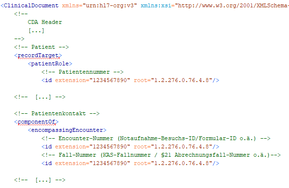
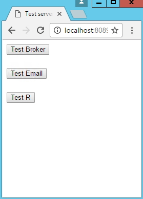
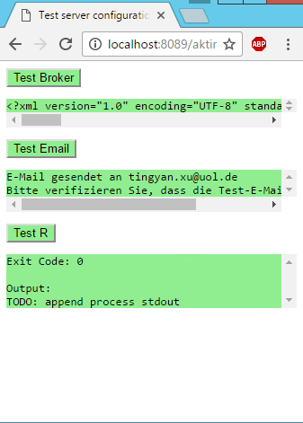
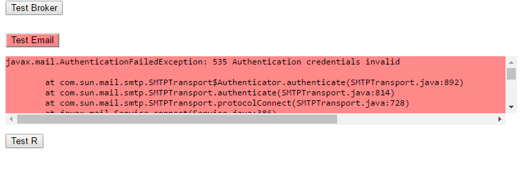

Installation und Konfiguration des AKTIN Data Warehouse
Auf dieser Seite wird der Prozess der Installation und Konfiguration des AKTIN DWH beschrieben. Die AKTIN-DWH-Software steht derzeit nur als Debian Paket zur Verfügung und wurde nur unter Ubuntu 20.04 Server LTS getestet. Wenn Sie eine andere Distribution verwenden möchten, kontaktieren Sie den AKTIN IT-Support. Bei einer Neuinstallation beachten Sie bitte die Hinweise unter der Seite Server-Installation.
- Vorbereitung der Installation
- Installation der AKTIN-DWH-Software
- Konfiguration und lokale Einstellungen
- Einstellungen in der i2b2-Adminoberfläche
- Test der Betriebsfähigkeit
- Betrieb des AKTIN Data Warehouse
- Weitere Anmerkungen
Vorbereitung der Installation
Freischaltung von root
Für die Installation des AKTIN DWH brauchen Sie einen Konsolenzugang zum Server sowie empfehlenswert die Rechte des Nutzers root. Standardmäßig ist dieser Nutzer seit Ubuntu 14.04 deaktiviert. Um ihn zu reaktivieren, wechseln Sie zunächst zu einer root-Sitzung über den Befehl
sudo -i
und geben Sie das Passwort des aktiven Nutzers an. Anschließend können Sie über den Befehl
sudo passwd root
den Nutzer root wieder reaktivieren. Dafür werden Sie aufgefordert, für root ein neues Passwort festzulegen und dies zu bestätigen. Haben Sie das Passwort festgelegt, können Sie sich nach einem Abmelden mit dem Nutzer root anmelden.
Freischaltung der Server-Adressen
Das AKTIN DWH braucht Zugriff auf folgende Server. Stellen Sie sicher, dass diese Adresse nicht von Ihrer Firewall blockiert bzw. zu den Ausnahmen hinzugefügt werden.
| Zugriff | Server | IP-Adresse | HTTP | HTTPS |
|---|---|---|---|---|
| Installation | de.archive.ubuntu.com | 141.30.62.23 | 80/tcp | - |
| Installation und Betrieb | aktin.org | 188.68.47.138 | - | 443/tcp oder 8443/tcp |
| Betrieb | aktin-broker.klinikum.rwth-aachen.de | 134.130.15.160 | - | 443/tcp |
Aktualisierung der Zertifkate
Stellen Sie sicher, dass Ihr Ubuntu-Server die aktuellesten Zertifikate besitzt. Anderenfalls kann ein Zugriff auf das AKTIN Repository mit den Installationspaketen fehlschlagen. Die Zertifikate können Sie über folgenden Befehl aktualisieren.
apt-get update && apt-get install -y ca-certificates
AKTIN Repository einbinden
Um das AKTIN DWH installieren zu können, müssen Sie zunächst das AKTIN Repository zu Ihrem Ubuntu-Server hinzufügen. Fügen Sie zunächst den Repository-Schlüssel hinzu:
sudo wget -O - https://www.aktin.org/software/repo/org/apt/conf/aktin.gpg.key | sudo gpg --dearmour -o /etc/apt/trusted.gpg.d/aktin.gpg
Anschließend können Sie die Repository-Quelle einbinden:
echo "deb https://www.aktin.org/software/repo/org/apt jammy main" | sudo tee /etc/apt/sources.list.d/aktin.list
Hinweis: Das Paket wurde nur mit Ubuntu 22.04 LTS getestet und verifiziert.
Installation der AKTIN-DWH-Software
Haben Sie alle Vorbereitungen für die Installation abgeschlossen, können Sie das AKTIN DWH über folgende drei Befehle installieren:
apt-get update apt-get install -y aktin-notaufnahme-i2b2 apt-get install -y aktin-notaufnahme-dwh apt-get install -y aktin-notaufnahme-updateagent
Das Paket aktin-notaufnahme-i2b2 installiert den für den Betrieb des DWH benötigten Applikationsserver und die Datenbank. Zusätzlich wird ein apache2-Server installiert, der im Betrieb als Reverse Proxy fungiert. Das Paket aktin-notaufnahme-dwh enthält die eigentliche Data Warehouse-Software. In der Regel ist dies das Paket, das im Laufe der Zeit von dem AKTIN Team weiterentwickelt wird und aktualisiert werden muss. Das letzte Paket aktin-notaufnahme-updateagent enthält zwei Ubuntu-Services, die es ermöglichen, den Prozess für die Aktualisierung des Paketes aktin-notaufnahme-dwh über die Oberfläche des AKTIN DWH durchzuführen. Dieses Paket ist optional und ist für den Betrieb des DWH nicht notwendig.
Insgesamt werden im Laufe der Installation folgende Pakete installiert und konfiguriert:
| Software | Version | Paket(e) |
|---|---|---|
| Wildfly | 22.0.1.Final | - |
| Postgres Datenbank Server | 14.15 | postgresql-14 |
| Apache2 | 2.4.52 | apache2 |
| Java Runtime Environment | 11.0.25 | openjdk-11-jre-headless |
| PHP | 8.1.2 |
php php-common libapache2-mod-php php-curl |
| R | 4.1.2 |
r-base-core r-cran-xml r-cran-lattice libcurl4-openssl-dev libssl-dev libxml2-dev tidyverse |
| Python | 3.10.12 |
python3 python3-pandas python3-numpy python3-requests python3-sqlalchemy python3-psycopg2 python3-postgresql python3-zipp python3-plotly python3-gunicorn |
Konfiguration und lokale Einstellungen
Nach Abschluss der Installation und vor Start der Anwendung ist es unbedingt notwendig, die Datei aktin.properties an die Anforderungen Ihres Systems zu konfigurieren. Die Datei befindet sich im Verzeichnis /opt/wildfly/standalone/configuration/aktin.properties. In dieser Datei werden Angaben zum lokalen DWH und Standort-spezifische Änderungen gemacht. Für das Anpassen der Datei aktin.properties muss folgender Befehl ausgeführt werden:
nano /opt/wildfly/standalone/configuration/aktin.properties
Wichtig ist hierbei das Feld local.email, in das die E-Mail-Adresse eingetragen wird. An diese eingetragene Adresse werden später Berichte und Meldungen geschickt. Es ist auch möglich, eine Liste von E-Mailadressen anzugeben, an die der Bericht gesendet werden soll (wie z.B. alle Oberärzte der Notaufnahme). In diesem Fall müssen die Einträge komma-separiert ohne Leerzeichen erfolgen.
Auch sollten Sie unter dem Feld broker.keys den alphanumerischen API-Key eintragen, der Ihnen zugesendet wurde. Sollten Sie noch keinen Key bekommen haben, melden Sie sich bitte bei it-support@aktin.org.
Weiterhin ist es auch wichtig, die Felder für die Email-Konfiguration am Ende der Datei entsprechend zu befüllen. In diesen Feldern wird die E-Mail-Konfiguration für die Ausgangsmailadresse vorgenommen, welche für hausinterne Benachrichtigungen und Berichte verwendet werden soll (z.B. für den Versand von monatlich erzeugten Berichtsdokumente an die angegebene Emfänger-Adresse). Die Sender-Adresse sollte eine dedizierte E-Mail-Adresse (Dienstkonto mit festem Passwort oder Funktions-E-Mail-Adresse) sein. Eine funktionstüchtige E-Mail-Adresse ist Voraussetzung für die Installation.
Welche Wirkung die jeweiligen Felder haben, finden Sie in diesem Abschnitt in der Template-Datei:
# name of the installation local.cn=AKTIN DWH # used in AKTIN reports, should contain the name of the Organization (Hospital) local.o=Ev. Klinikum Beispielhausen # used in AKTIN reports, should contain the name of the Unit (Notaufnahme, Rettungsstelle, ZNA, etc.) local.ou=Notaufnahme # town local.l=Beispielhausen # state local.s=Niedersachen # country local.c=Deutschland # default e-mail-adress for notifications, reports (non technical); multiple adresses possible (comma separated in one line without empty space) local.email=zna-contact@klinikum-beipielhausen.de local.tz=Europe/Berlin # language tag according to IETF BCP 47. If not defined, the system language will be used. local.language=de-DE # location of the R standalone executable rscript.binary=/usr/bin/Rscript # needed for read/write access to the i2b2 database i2b2.project=AKTIN i2b2.datasource.crc=java:/QueryToolDemoDS # needed for i2b2 authentication and user management i2b2.service.pm=http://localhost:9090/i2b2/services/PMService/ i2b2.service.domain=i2b2demo # broker and report paths report.data.path=/var/lib/aktin/reports report.temp.path=/var/tmp/report-temp report.archive.path=/var/lib/aktin/report-archive report.debug.keeptempfiles=false broker.data.path=/var/lib/aktin/broker broker.archive.path=/var/lib/aktin/broker-archive broker.uris=https://aktin-broker.klinikum.rwth-aachen.de/broker/ broker.intervals=PT15M # file import data and script paths, interval to check script timeout import.data.path=/var/lib/aktin/import import.script.path=/var/lib/aktin/import-scripts import.script.check.interval=10800000 # used in AKTIN to connect to the broker, you can get your API key from it-support@aktin.org broker.keys=XXXyourapikeyXXX db.datasource=java:jboss/datasources/AktinDS wildfly.management.url=http://localhost:9990/management wildfly.management.user=admin wildfly.management.password=admin2 # patient reference, allowed values: Patient, Encounter, Billing study.id.reference=Patient # root numbers of the different reference types. Can be empty. cda.patient.root.preset=1.2.276.0.76.4.8 cda.encounter.root.preset=1.2.276.0.76.3.87686 cda.billing.root.preset=1.2.276.0.76.3.87686.1.45 # label for the extension textfield of the consent-manager, based on the reference type. study.id.patient.label=Patientennr. study.id.encounter.label=Episodennummer study.id.billing.label=Fallnummer # character for separating root and extension in case of manual setting. Will be applied if root is not set in properties. study.id.separator=/ # log function for imported CDAs: all imported CDAs are stored as a file (Allowed values: 'all','info' or 'none') import.cda.debug.dir=/tmp/ import.cda.debug.level=none import.cda.fhir.outcome.level=info # mail server via java, use configuration below email.session=local # adress received mails will reply to mail.x.replyto=it-support@aktin.org # mail server protocol mail.transport.protocol=smtp # mail server name mail.smtp.host=smtp.gmail.com # mail server port, e.g. 465 (SSL) or 587 (TLS), or 25 (no auth) mail.smtp.port=587 # mail server authentification, false for "no login is needed" mail.smtp.auth=true # user name for authentication (this name is displayed as addressor of every mail) mail.user=userforssending # password for authentication mail.x.password=passwordforsending # security configuration mail.smtp.starttls.enable=true # connection timeout mail.smtp.timeout=10000 mail.smtp.connectiontimeout=10000
Für Kliniken, die die Root-ID aus dem Beispiel-CDA übernommen haben (z.B. mit einer E.Care-Schnittstelle) und für den Consent-Manager die Patientennummer verwenden (empfohlene Einstellung), müssen keine weiteren Änderungen vorgenommen werden. Die Einstellungen in aktin.properties sind bereits korrekt eingestellt.
Für Kliniken mit einer AGFA-Schnittstelle muss lediglich die Patientennummer geändert werden. Suchen Sie hierfür in der Datei aktin.properties die Zeile
cda.patient.root.preset=1.2.276.0.76.4.8
heraus und ändern Sie den Wert auf 1.2.276.0.76.4.17.9814184919.
Sollten Sie die Fallnummer oder die Encounter-Nummer statt der Patientennummer für den Consent-Manager verwenden wollen und/oder Ihr KIS-Anbieter weder AGFA noch die Beispiel-Root-IDs übernommen haben, so befolgen Sie bitte die folgende Anleitung und halten Sie gegebenenfalls Rücksprache mit it-support@aktin.org:
Für den Ein- oder Ausschluss von Patienten im Consent-Manager (weitere Informationen zu diesem Feature finden Sie in der Benutzeranleitung) wird eine Identifikationsnummer des Patienten benötigt. Hierfür stehen drei verschiedene Nummern zur Verfügung: Patientennummer (Patient), Episodennummer (Encounter) und Fallnummer (Billing). Unter dem Feld study.id.reference muss die entsprechende Referenz eingetragen werden. Wir empfehlen Ihnen, die Patientennummer (Patient) zu benutzen, da im Gegensatz zu den anderen beiden Nummern diese für jeden Patienten einzigartig ist. Zum aktuellen Zeitpunkt findet bei der Eintragung eines Ein- oder Ausschlusses keine Überprüfung statt, ob der Patient bereits mit einer anderen Episoden- oder Fallnummer eingetragen wurde, sodass es gegebenenfalls zu Dubletten kommen kann, wenn nicht die Patientennummer genutzt wird.
Für jede dieser Nummern gibt es i.d.R. eine feste Root-Nummer, die unter den Feldern cda.patient.root.preset, cda.encounter.root.preset bzw. cda.billing.root.preset hinterlegt werden kann. Dadurch muss die Root-Nummer nicht bei jedem Ein- bzw. Ausschluss angegeben werden und die Angabe der patienten-, episoden- oder fallbezogenen Nummer, die auch im Krankenhausinformationssystem sichtbar ist (die sogenannte Extension-Nummer), ist ausreichend.
Um herauszufinden, welche dieser Nummern über die AKTIN-Schnittstelle in das Data-Warehouse übertragen werden und somit in den Einstellungen angegeben werden können, benötigen Sie Zugriff auf ein CDA-Dokument. Dieses wird als Datenstruktur zur Übertragung der Daten aus dem Notaufnahme-System in das klinikinterne Data Warehouse verwendet. Ein gekürztes CDA-Beispieldokument sieht wie folgt aus:

Hier befinden sich die jeweiligen Root- und Extension-Nummern der Referenzen. Bei der ersten ID unter encompassingEncounter ist die Episodennummer zu finden. Die zweite ID steht für die Fallnummer. Die Patientennummer ist unter patientRole.id zu finden. Prüfen Sie, welche dieser Nummern dem Notaufnahme-Personal bekannt ist, d.h. welche der Nummern mit der im Krankenhausinformationssystem übereinstimmt. Tragen Sie von dieser Nummer die im CDA-stehende Root-Nummer in die Datei aktin.properties ein und geben die entsprechende Referenz (Patient, Encounter oder Billing) an.
Sollte in der Klinik keine feste Root-Nummer verwendet werden, darf auch keine Root-Nummer in aktin.properties hinterlegt werden – lassen Sie das Feld in diesem Fall einfach leer. Dies kann der Fall sein, wenn entweder die Extension-Nummer direkt als Root-Nummer verwendet wird oder sich die Root-Nummer klinikintern unterscheidet. Im ersteren Fall tragen Sie im Consent-Manager ganz normal die Identifikationsnummer ein, welche dann als Root-Nummer erkannt wird. Im letzteren Fall geben Sie unter study.id.separator ein Trennzeichen ein und tragen im Consent-Manager die Root-Nummer und die Extension-Nummer mit dem definierten Trennzeichen dazwischen ein.
Nachdem Sie die Datei aktin.properties konfiguriert und abgespeichert haben, muss der Wildfly-Server neugestartet werden. Im Zuge der Installation wurden bereits alle Komponenten des AKTIN Data Warehouse automatisch gestartet. Führen Sie also den Befehl
service wildfly restart
aus, um den Server neuzustarten und die neuen Einstellungen in den Wildfly-Server einzulesen. Haben Sie die Installation erfolgreich abgeschlossen und die Datei aktin.properties entsprechend konfiguriert und eingespielt, ist das AKTIN Data Warehouse nun einsatzbereit.
Für nachträgliche Änderungen an aktin.properties beachten Sie die Hinweise im Abschnitt Weitere Anmerkungen.
Einstellungen in der i2b2-Adminoberfläche
Falls Sie den Data-Warehouse-Manager mit einem Benutzer verwenden wollen, der kein i2b2-Admin ist (d.h. keinen Zugriff auf die i2b2-Adminoberfläche unter http://<IHR SERVER>/webclient hat), sind noch die folgenden zwei Schritte für einen erfolgreichen Login in den Data Warehouse-Manager notwendig:
-
Die Zuordnung des Nutzers zum AKTIN-Projekt
-
Die Zuweisung einer AKTIN-Rolle an den Benutzer
Das genaue Vorgehen hierfür können Sie in den letzten beiden Abschnitten Benutzer einem Projekt hinzufügen und AKTIN-Rolle zuweisen der i2b2-Benutzeranleitung nachlesen.
Test der Betriebsfähigkeit
Nach der Installation der AKTIN-DWH-Software ist es anzuraten, dessen Betriebsfähigkeit zu testen. Im folgenden Bereich können Sie Methoden und Funktionalitäten für die Verifikation der Betriebsfähigkeit entnehmen.
Data Warehouse
Wenn die Installation erfolgreich durchgeführt wurde, kann anschließend per Webbrowser auf das integrierte Data Warehouse zugegriffen werden. In der Adresszeile muss die entsprechende IP-Adresse/Servername angepasst werden: http://<IHR SERVER>/webclient/
CDA Importschnittstelle
Die Importschnittstelle des Servers kann mit den Client-Programmen aus dem Software-Paket (ZIP) des Demo-Server getestet werden:
java-client-fhir.bat http://<IHR SERVER>/aktin/cda/fhir/Binary examples\basismodul-beispiel-storyboard01.xml
Verbindung und E-Mail-Konfiguration
Unter dem Link http://<IHR SERVER>/aktin/admin/plain/test.html lassen sich die durchgeführten Anpassungen bezüglich Broker und E-Mail sowie Reporterstellung testen.

Der erste Button testet die Erreichbarkeit des zentralen AKTIN-Broker. Der lokale Server übersendet dem zentralen Broker nur Statusinformationen, wie die Serverversion und Aktivität. Der zweite Button testet die eingerichtete E-Mail-Adresse. Nach Bestätigung des Buttons wird eine E-Mail an die in aktin.properties angegebene Ziel-Adresse gesendet. Der dritte Button testet die R-Bibliotheken. Diese werden zur Erzeugung der Berichte verwendet.

Sollte der E-Mail-Test fehlschlagen und das Textfeld zeigt keine grüne Erfolgsmeldung anzeigen, könnte dies ein Hinweis auf eine fehlerhafte E-Mail-Einstellung sein. In diesem Fall muss die E-Mail-Konfiguration geändert (Abschnitt Weitere Anmerkungen) oder die Softwarepakete erneut geladen werden.

Betrieb des AKTIN Data Warehouse
Anleitungen zur Benutzerverwaltung sowie dem Betrieb des AKTIN- und i2b2 Data Warehouses finden Sie unter der Rubrik Support für Anwender.
Weitere Anmerkungen
-
Im Internet Explorer kommt es in der i2b2-Oberfläche zu Darstellungsfehlern. So werden z.B. keine User unter Manage Users angezeigt und unter Manage Projects sind die Projekte nicht einsehbar (sattdessen erscheint ein permanentes Ladezeichen). Dieser Fehler ist bereits bekannt, kann aber von unserer Seite aus nicht behoben werden, da i2b2 von i2b2 Foundation Inc. entwickelt wird. Wir würden Sie daher bitten für die Nutzerverwaltung einen anderen Browser zu verwenden (z.B. Firefox oder Chrome).
-
Für nachträgliche Änderungen in der Datei aktin.properties bearbeiten Sie über den Befehl nano die im Wildfly-Konfigurationsordner hinterlegte Datei. Nach Abschluss der Bearbeitung, speichern Sie die Änderungen ab und starten Sie den Wildfly-Server neu.
nano /opt/wildfly/standalone/configuration/aktin.properties service wildfly restart